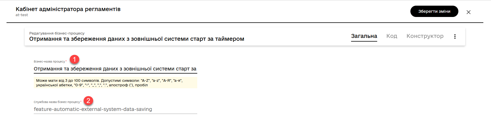
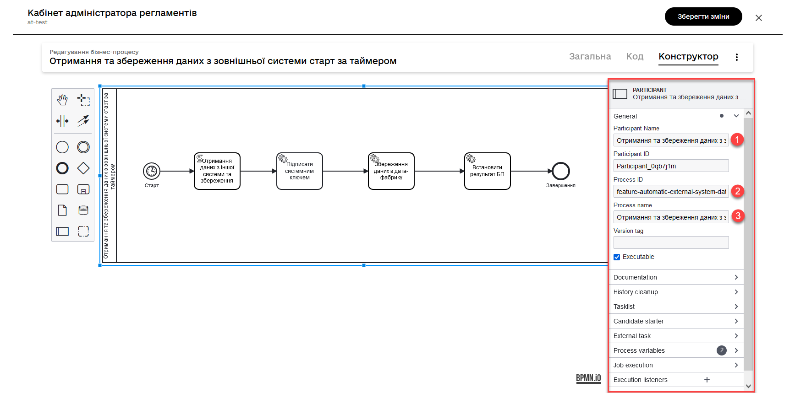
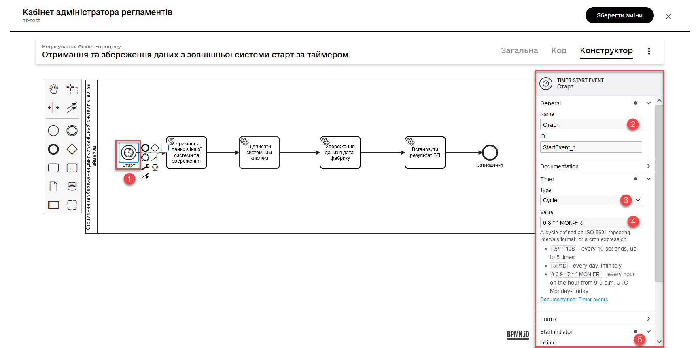
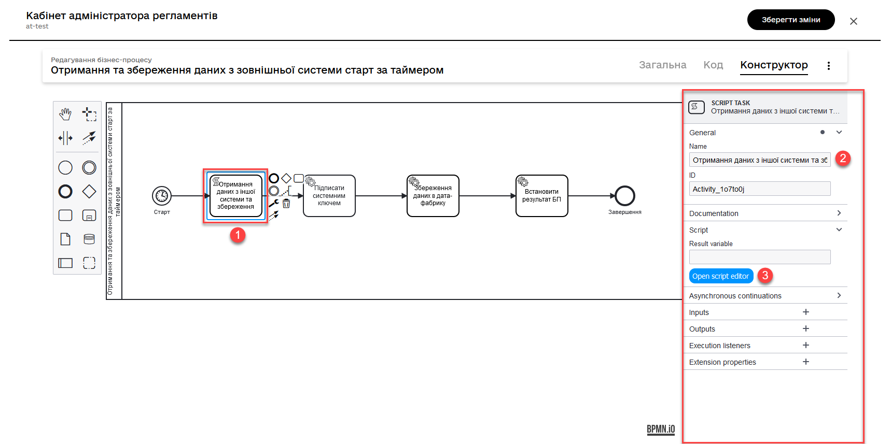
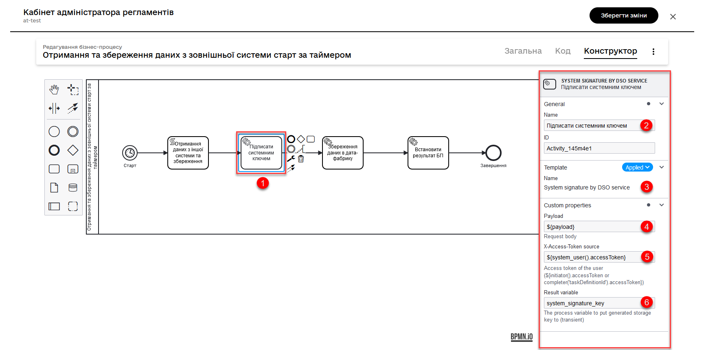
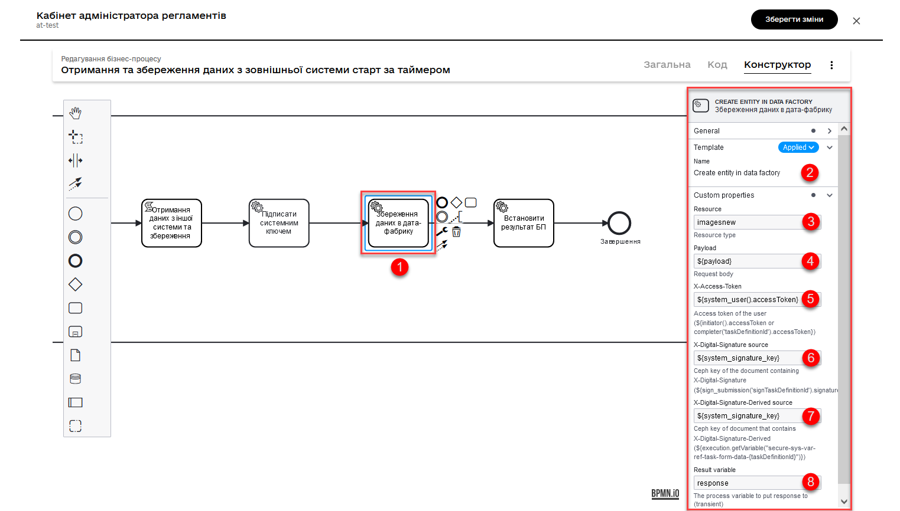

Launching a business process by schedule
1. General overview
This page demonstrates an example of implementing and launching a business process that is automatically activated according to a schedule using Camunda BPM. The process initiates itself at a specified time and performs tasks according to a defined sequence.
A reference business process has been created to help regulations developers and modelers to better understand and effectively use schedulers in Camunda BPM.
2. Reference example
| You can find an example .bpmn process model under the name automatic-external-system-data-saving.bpmn in the demo registry consent-data by following this link: https://admin-tools-consent-data.apps.envone.dev.registry.eua.gov.ua/gerrit. |
2.1. Brief overview of process components and their purpose
-
Start Event with the timer — initiates the business process at a set time, daily from Monday to Friday at 8:00.
-
Script — retrieves data from an external system and creates an object for further storage.
-
Data signing with system key — ensures that the data received from the external system is authentic and intact.
-
Entity creation in the database — stores the received data in the database.
-
Setting the status of the business process — indicates the successful completion of the business process.
-
End Event — marks the end of the business process.
2.2. Modeling
-
Log in to the Regulations administrator portal.
-
Open the Process models section.
-
Створіть новий процес, вкажіть бізнес- та службову назву та перейдіть до вкладки Конструктор.

-
Model a pool for the business process.

-
Create a Start event starting event and perform the following settings: .
-
Enter the task name, for example,
Start. -
In the Timer section, set the schedule for starting and executing the business process.
-
In the
Typefield (Timer Definition Type), specify the timer type -Cycle.The
Cycleoption allows you to configure recurring processes or events based on a specific time interval. A cyclic timer can be set at the level of a start event, intermediate event, or boundary event associated with a task performer.For more details on timer types, refer to Timer Event.
-
In the
Valuefield, specify the schedule in a specific format for process execution. For example,0 8 * * MON-FRI.You can configure a cyclic timer using the standard
ISO 8601format for repeat intervals or acronexpression.- Examples of values for the ISO 8601 format:
-
-
R5/PT10S— every 10 seconds, up to 5 times. -
R/P1D— daily, indefinitely.
-
- Examples of values for the cron format:
-
-
0 8 * * MON-FRI:
-
0: minutes (exactly at 0 minutes) 8: hours (8:00 in the morning) *: day of the month (any day of the month) *: month (any month) MON-FRI: day of the week (Monday - Friday)
Thus, the above
cronexpression means that the process will be triggered every day from Monday to Friday at 8:00 in the morning.-
0 0 9-17 * * MON-FRI:
This
cronexpression means that the process will be triggered every hour from 9 to 17 UTC time from Monday to Friday.
-
-
Specify the process initiator as
initiator.What is an initiator?
The phrase "
Start initiator = initiator" indicates that the value of the initiator (i.e., the person or system that initiated the process) will be set as the initiator.In the context of business processes, the initiator is the person who starts the process or is responsible for its initiation. Typically, the initiator is a user who triggers an action or a system that automatically initiates the process.
У цьому випадку,
initiatorможе бути використаний для ідентифікації особи чи системи, що стартували процес, у подальших етапах бізнес-процесу або для контролю доступу до ресурсів. In this case, the terminitiatorcan be used to identify the person or system that initiated the process in subsequent stages of the business process or for access control to resources.
-
-
Create a script task and use the script to retrieve and process data. To do this, open the visual code editor (for more information about the code editor, refer to Editing business process scripts in a visual code editor).
In our example, we retrieve data from another system.
Script for data retrieval and processing
import java.text.SimpleDateFormat; import java.util.Date; SimpleDateFormat date = new SimpleDateFormat("dd_MM_yyyy") String url = 'https://wallpapercave.com/wp/wp2601438.jpg' String fileName = 'file_'.concat(date.format(new Date())).concat('.jpeg') def documentMetadata = save_digital_document_from_url(url, fileName) def payload = [:] def listFileObj = [] payload.name = fileName def fileObj = [:] fileObj.id = documentMetadata.id fileObj.checksum = documentMetadata.checksum listFileObj << fileObj payload.image = listFileObj set_variable('payload', S(payload, 'application/json'))The script retrieves data from an external system, creates a
payloadobject with the obtained data, and stores it as a process variable for further use in subsequent stages of the business process, namely:-
Imports the
java.text.SimpleDateFormatandjava.util.Dateclasses for working with dates:import java.text.SimpleDateFormat; import java.util.Date; -
Creates a new
SimpleDateFormatobject with the format “dd_MM_yyyy” for date formatting:SimpleDateFormat date = new SimpleDateFormat("dd_MM_yyyy"); -
Defines the image URL for downloading:
String url = 'https://wallpapercave.com/wp/wp2601438.jpg'; -
Generates a file name based on the current date, adding the prefix ‘file_’ and the extension .jpeg:
String fileName = 'file_'.concat(date.format(new Date())).concat('.jpeg'); -
Calls the function
save_digital_document_from_url(url, fileName)to save the digital document (image) with the specified URL and file name:def documentMetadata = save_digital_document_from_url(url, fileName); -
Creates an empty payload dictionary and a list
listFileObjfor constructing the JSON data structure:def payload = [:]; def listFileObj = []; -
Assigns the generated file name to the name field of the
payloaddictionary:payload.name = fileName; -
Creates a new empty dictionary
fileObj:def fileObj = [:]; -
Assigns the
idandchecksumfrom the document metadata to the respective fields of the fileObj dictionary:fileObj.id = documentMetadata.id; fileObj.checksum = documentMetadata.checksum; -
Adds
fileObjto the listlistFileObj:listFileObj << fileObj; -
Assigns the list
listFileObjto the image field of thepayloaddictionary:payload.image = listFileObj; -
Sets the variable ‘payload’ with the value of the payload dictionary converted to a JSON string for use in subsequent steps of the business process.
set_variable('payload', S(payload, 'application/json'));
-
-
Model a Service Task for data signing with a system key.
- Settings:
-
-
Use the delegate System signature by DSO service from the template catalog for applying the system signature.
-
Pass the input data as the variable
${payload}in the corresponding field. -
Pass the user token. You can do this using the JUEL function
system_user()and theaccessTokenmethod. For example,${system_user().accessToken}. It can be further used in integration connectors for integration on behalf of the user.You can also use the process initiator’s token. For example,
${initiator().accessToken}.For more details, refer to bp-modeling/bp/modeling-facilitation/modelling-with-juel-functions.adoc. -
Save the response in a variable. For example,
system_signature_key.

-
-
Save data to the database. Create a new record in the database, storing the value of the
entityLocationobject in the respective column.-
Use the Create entity in data factory delegate to create an entity in the database.
Alternatively, you can use the general integration connector Connect to data factory. For more information about integration extensions for business processes, refer to bp-modeling/bp/element-templates/bp-element-templates-installation-configuration.adoc.
-
Specify the resource/API endpoint. For example,
test-entity, which corresponds to the table name you defined when creating the data model registry —test_entity. -
Pass the input data as the
${payload}variable in the corresponding field. -
Pass the user token. You can do this using the JUEL function
system_user()and theaccessTokenmethod. For example,${system_user().accessToken}. -
Specify the
X-Digital-Signature source— the source of the system signature. For example,${system_signature_key}. -
Specify the
X-Digital-Signature-Derived source— the Ceph document key that contains information about the signed data. For example,${system_signature_key}. -
Save the response to a result variable, for example,
response.
-
-
Set the status of the business process to reflect a successful completion of the business process. To do this, create a Service Task and apply the Define business process status delegate.
-
Finish the process using the End Event.
-
Apply the made changes to the master branch to publish the process in the schedule.
For more details, see Reviewing metadata and managing settings for the candidate version.
3. Use within the User portal
The business process that has been modeled and published in the schedule becomes accessible in the Officer Portal via the link https://officer-portal-<registry-name>.apps.<cluster-name>.dev.registry.eua.gov.ua. This process can be found in the Available Services > Reference business processes section. It will be launched and executed according to the established schedule.